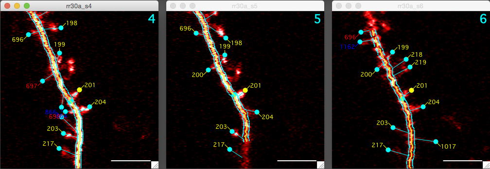
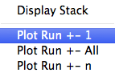
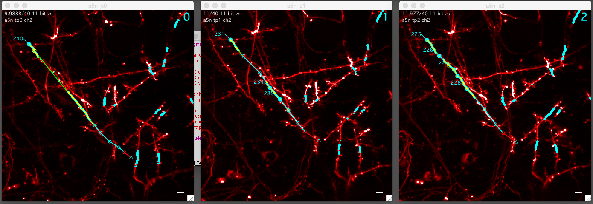

Run plot
A run plot is a sequence of stack windows, one for each session in a timeseries. The purpose of a run plot is to visualize the dynamics between annotations. The image below shows a run plot of spines. Spine # 201 is selected in each of three stack windows corresponding to timepoints.

Opening a run plot

To open a run plot of annotations, right-click on an annotation and select ‘Plot Run +- …’. This will work in all map plots and search results.
All run plots will have the timepoint of the selected annotation as the center window. The different options (+- 1, +- All, +- n) lets you choose how many timepoints before and after the selected timepoint.
There are three types of run plots:
- Annotation Run. Connected (persistent) annotations are centered and zoomed across sessions in a timeseries. Open an annotation run plot by right-clicking an annotation in a map plot.
- Stack Run. A run plot showing the sequence of stacks in a timeseries. Open a stack run plot by right-clicking a session in the main time series panel.
- Segment Run. Connected (persistent) segments are selected across sessions in a timeseries. Open a segment run plot by right-clicking a segment in a segment plot. There is currently only one type of segment plot and it is opened using the ‘Segment Map’ button in the main time series panel. This is only for spine annotations that have segment tracings.
Navigating a run plot
Each stack window in a run plot behaves just like an individual stack window. For example, shift+click will create a new annotation. In addition, run plot stack windows have some added features.
Aligning a run plot to a selected annotation
Control+click on an annotation in one stack window of a run plot will select, center, and zoom that annotation in all stack windows of the run plot. If a stack at a given timepoint is missing the annotation (for example, the object was subtracted), the image will center and zoom to the region where the annotation ‘would be’.
Linking all the stack windows in a run plot
Keyboard-l (that is lower-case ‘l’ as in ‘link’) will visually link all stack windows in a run such that panning, zooming, or setting the slice in one window will propagate to all other stack windows in the run. Linking can be turned on and off again by pressing keyboard-l.
Editing annotation dynamics in a run plot
The dynamics between annotations and segments can be edited in a run plot.
- Keyboard a : The selected annotation becomes added.
- Keyboard s : The selected annotation becomes subtraced
- Keyboard p : The selected annotations become persistent. This requires a selection in the previous timepoint.
- Keyboard b : The selected annotation is tagged as bad. Bad tags are only available for annotations, not for segments.
Persistent is a special case. When two annotations are connected between two sequential timepoints/sessions we refer to them as ‘persistent’. To connect two annotations and make them persistent, both annotations need to be selected (in their respective timepoints) and the annotations in the latter timepoint needs to be marked persistent with keyboard p.
Important: The keyboard commands a/s/p will default to editing the dynamics of annotations. To edit the dynamics between segments, turn on ‘Segments’ edit.
All of these keyboard commands have corresponding right-click contextual menus. Select an annotation and right-click to open the contextual menu.
Reading annotation labels in a run plot
The dynamics of each annotation is encoded in the color of its label, green for addition, red for subtraction, and yellow for persistent. Persistent annotations are connected between timepoints, we call this a run. Annotations that are in the same run will be labelled with the same number in each of the stack windows of a run plot. Added annotation get a new label number. This system is designed to quickly visualize the connectivity between annotations.

Example run plot following a spine (yellow circle) through multiple timepoints in a map.

Same run plot as above after zooming in. All stacks in a run plot can be synchronized with keyboard ‘l’ (as in Link) so that zooming, panning, and setting the slice in one stack window of the run will propagate to all other stack windows of that run.

A segment run plot with the same segment selected in all timepoints. Note the difference in scale compared to the spine run examples. All scale bars are 5 um.